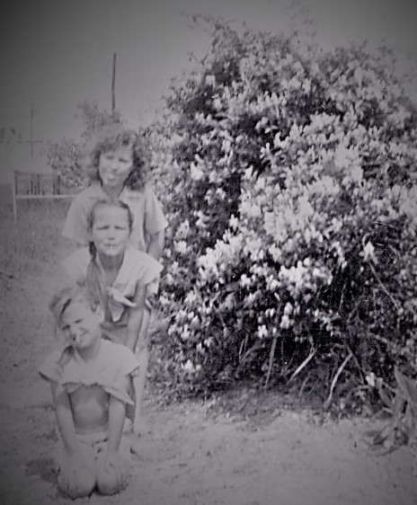

Dwellings of grandparents, parents, ourselves and oft others hold mnemonic clues, milepost of our lives' trajectories.
Pat can no loger tell me of her early life memories; I recall only her reciting her attachment to the Bluff street house. And of course the Meadow Oaks house was important to her childhood and adolescence.
Once driveing through Arkansas, a road sign to Hope, Arkansas, kindled recognition in Pat, but she had only childhood memories and those memories were useless for location of the property her father had farmed durin World War Two.
The remainder of Pat's abodes are mostly those she shared with me.
Whitmore Lake, MI
First House
We were fresh out of the Army - well half a year out. Jim and Linda Lee Taylor sold us their lake community cottage. It wasn't a big place, something the size of a one bedroom apartment, but it was a start.
This first house had been a summer get away house for auto industry families, looking to escape Detroit's summer heat in the 1930's. Over time people of modest means made do with the structures, living year around in them.
w3-third
The w3-third class uses 33% of the parent container.
On screens smaller than 401 pixels it resizes 100%.
w3-twothird
Austin, TX, Norris Street
House full of children
Before the Norris nouse, we had called at least 15 addresses home.
The Norris home offered stability to our children who attended Zilker Elementary school.
w3-half
The w3-half class uses 50% of the parent container.
On screens smaller than 601 pixels it resizes 100%.
w3-half

High School Years
Fort Worth
Patricia was born to Jeff Augustus and Clara (Gray ) Bird
The first house in Pat's life was on Bluff Street. Close enough to downtown FOrt Worth that her Mother could walk to Everybody's Department Store.
w3-quarter
The w3-quarter class uses 25% of the parent container.
On screens smaller than 301 pixels it resizes 100%.